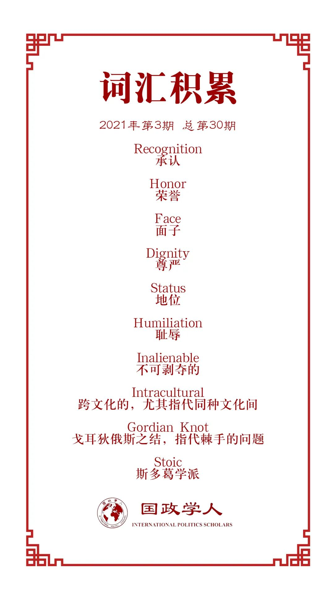

收录于合集 #理论研究 96个

作品简介
【作者】 Dr Jörg Friedrichs （约尔格·弗里德里希斯）; 牛津大学国际发展系政治学副教授；他采用综合的跨学科方法进行学术研究，主要兴趣围绕国际关系和政治社会学领域，除此之外，他提出了新的国际关系跨文化理论。
【编译】 张彦赪（国政学人编译员，悉尼大学国际关系专业）
【校对】 赵雷
【审核】 扎西旺姆
【排版】 胡蝶
【美编 】李九阳
【来源】 Friedrichs, J 2016, ‘An intercultural theory of international relations: how self-worth underlies politics among nations’ International Theory , vol. 8, no. 1, pp. 63–96, doi: 10.1017/S1752971915000202. (格式为Havard)
【归档】 《国际关系前沿》2021年第3期，总第30期。
期刊简介
《国际理论》 International Theory (IT) 是一本经过同行评审的期刊，由剑桥大学出版。其致力于促进有关世界政治的法律和规范方面的理论学术研究。该期刊对所有学科的理论开放，只要其解决了广泛定义的政治问题并与国际相关。《国际理论》的首要目标是促进跨理论和学科传统的交流和参与。2017年数据显示，期刊的影响力因子为1.667，在政治学类别的169中期刊中排名55。
国际关系的跨文化理论：自我价值如何影响国家间政治？
An intercultural theory of international relations: how self-worth underlies politics among nations
Dr Jörg Friedrichs
内容提要
自我价值是人类的终极动力，它不仅在个人层面，同时也间接地在群体层面发挥作用。 国际关系学者已开始承认这一点，并强调地位和尊重对国家的重要性。然而，很少有人意识到在追求自我价值上存在的显著文化差异。有的文化将荣誉视为最主要的追求；有的则认为保护面子 是重中之重；也有的将尊严居之榜首。正如本文所示，这般各自迥异的自我实现文化（荣誉，面子，尊严），不仅在人民和群体间，也在国家和民族，及其彼此的关系中产生天壤之别。
该理论的基本前提是，包括民族和国家在内的所有人民和群体都渴望获得对其自我价值的承认，然而他们促成该目标的方式有所不同。理解荣誉，面子和尊严中不同的文化逻辑，能帮助学者理解和预测属于相同或者不同自我价值实现文化的国家在国际关系层面的互动，并对这些预测进行适当的检验和合理性探究（plausibility probes）。
该理论提出五个假设，并将地位和耻辱（Humiliation）作为重要的中介因素或干预机制。该理论不与其他国际关系理论（如现实主义或自由主义）冲突，而是起到补充的作用。它有时为熟知的现象提供更深入的解释，有时则能发掘其他理论难以解释的现象。正如本文将证明的那样，跨文化理论可以解决以下问题：为什么中日韩关系比法国- 德国和荷兰-德国关系更困难？为什么俄罗斯似乎比西方国家更关注地位，而中国更容易遭受耻辱和仇恨情绪的影响？
关键词 ：承认，荣誉，面子，尊严，地位，耻辱
文章导读
01
概念简析：荣誉，面子和尊严
在尊严（Dignity）文化中，自我价值为主体固有，是不可剥夺的。在面子文化中，自我价值由参考群体所决定，是外在并可剥夺的。而在荣誉文化中，自我价值是被内化的，当重要的他人不给予尊重时，将引起争端。
根据权威的定义，荣誉 (Honor) 是“一种价值，存在于自己的眼中，也被社会所审视。” 在荣誉文化中，自我价值能够彰显地位，赋予某些人被尊重的权利。在该文化中，得到荣誉的人为自己的地位感到自豪，努力争取卓越，并对任何缺乏尊重的行为产生强烈愤慨。因此，荣誉取决于角色的实现。当重要的他人发现你没有遵守荣誉准则时，你必须证明他们是错误的。这种“强硬”的警告使荣誉文化陷入竞争，对抗和麻烦之中。
相比之下，尊严则截然不同。文献中，尊严被定义为“一种坚定的信念，即每一个个体出生便拥有的内在价值，并至少在理论上，人人平等。”在尊严文化中，自我价值就是与生俱来的权利，没人应把它从你身边拿走。然而，存在着另一个问题：虽然理论上尊严是不可剥夺的，但现实中，我们可能会失去尊严。例如，我们可能会因为严重的不平等，或者因其他重要人物的围攻或欺负而丧失尊严。因此，尊严的不可剥夺性是理想而非现实的。尊严社会面临着这样的矛盾：尊严本应不可被剥夺，但却又脆弱十足，同所有其他形式的自我价值一般，都将取决于承认。
面子 (Face)，又或作为“他人注视中的自我社会定位”是一种解决荣誉与尊严之间矛盾的稳定方法。有学者提出面子“是一种个人可以根据他人，从而自我声称的尊重。这样的尊重形成于个人在社交网络中的相对位置，以及在该位置上，他人对其在此社会角色上的完成度，和通常行为接受度的评价。”与尊严相反，面子文化中的自我价值是外在且可剥夺的。在面子文化中，你的价值属于你所在的社群，它既可以赋予也可以剥夺你的价值。你可以通过面子工程改善自己的公众形象，就像可以用化妆为自己的容貌增色一样，重要的是他人的目光。以这种方式构筑的自我价值是连续的，却以自主性(personal autonomy)为代价。当人们将自我价值归功于他人时，就会变得厌恶损失而谨慎地保护自己。人们理解自己的价值超出了他们自我的范围，并且深谙丧失面子的惨重损失。
将荣誉，面子和尊严视为一个阶段模型（a stage model）是可能的。在东亚，一千年前曾有从荣誉文化到面子文化的转变。在近几个世纪中，西方经历了从荣誉到尊严的过渡。这些变化取决于我们的价值观，我们是否将这种进步理解为进步？以及在何种程度上理解这种进步。即使在西方，从荣誉到尊严的过渡也并不久远。在西方部分地区，例如拉丁美洲，这一过程仍然不完整。而日本和韩国，可能正进行着从面子到尊严的类似过渡。在像俄罗斯和印度这样的国家，当尊严失败时，荣誉文化仍然成为人们的备选。 该阶段中的逆转并非不可能，尽管尊严占上风，但历史的尽头尚未显现。
02
作用于社会和政治的双因素
一、地位和地位焦虑
在不同的荣誉、面子或者尊严文化之中，人们的生活有着显著的差异。 然而，自我价值文化本身几乎没有能力影响社会和政治结果。自我价值文化是通过地位以及地位焦虑等中介因素产生结果。 在每种自我价值文化中，地位和地位焦虑都独特地干预或未能干预（intervene，or fail to intervene）关系的塑造，使之要么积极稳定，要么棘手而不稳定，因而对社会和政治产生影响。
二、耻辱和仇恨
将自我价值与社会和政治结果联系起来的另一种机制是耻辱和仇恨。 当行为体无法消解他人对其承认的误解（misrecognition）时，耻辱感便出现了。对承认的误解在不同的自我价值文化中遵循着不同的逻辑，这将带来陆续的影响：耻辱或许会因滋生的仇恨破坏社会关系的稳定；也可能以受害者和施恶者的重归于好为终结。
尼采和舍勒指出，仇恨是一种消极情绪，于其中，行为体会将另一行为体的优越能力，认为或误认为是一种道德自卑的迹象，进而产生敌意或者复仇的情绪。这可能会破坏关系的质量和稳定。
03
同种文化内的国际关系
同属一种自我价值文化对包括国家在内的社会整体具有影响，本节涵盖属于同一文化的国家之间的国际关系。
一、 荣誉文化
假设1：荣誉文化之间的关系
（a）地位等级制度以牺牲下等者为代价来赋予上等者权力。
（b）地位焦虑是同等者（equals）之间冲突的重要根源。
（c）当被羞辱的人享有同等地位时，冲突就会泛滥。
将中东的国家和社会理解为荣誉文化的范例，可能有助于解释该地区国际关系冲突频发的事实。由于荣誉文化中要求对手间一决高下，因此地位焦虑是潜在冲突的重要来源。
二、面子文化
假设2：面子文化之间的关系
（a）地位层次清晰，并取决于团体的共识。
（b）明确且协商一致的（consensual）的等级制度减轻了地位焦虑。
（c）虽然概率低，但耻辱会严重破坏两国关系的稳定。
东亚历史是观察面子文化间国际关系的理想之地。在西方殖民主义出现之前，从1368年到1841年间，孕育了长达五世纪的“儒家长治久安”（Confucian long peace）。其中的国际等级制度很明确：中国作为中央王国，被“用文化和文明定义的社会等级制度”所环绕；中国，韩国，越南和日本处于和平状态，而针对非汉化的“野蛮人”的战争则很普遍。
三、尊严文化
假设3：尊严文化之间的关系
（a）尊严文化之间的关系是相对良性的。
（b）地位和地位焦虑的重要性有限。
（c）耻辱和仇恨的重要性也有限。
将尊严文化中自我价值理解为内在而不可剥夺的，会淡化地位和地位焦虑的重要性。 尽管实践中并非常常如此，但至少在理论上，权力地位绝不是侵犯任何人的尊严的借口。尊严不会因地位较低而减损，这几乎是以牺牲地位较高国的利益来赋予地位较低国权力。例如，欧盟的小成员国与德国进行快速和宽松的竞争，又或者小国家经常草草敷衍美国。而这样的情况通常不会在面子文化（如中国）或是荣誉文化国家（如俄罗斯）中发生。
尊严文化之间的关系也应免于耻辱和仇恨的影响。耻辱和仇恨在荣誉和羞耻文化中常是麻烦的预兆，而尊严文化则淡化了它们的重要性。例如，参考第二次世界大战后的法德关系和英德关系，并将其与中日及日韩关系进行比较可以发现，在东亚，抗日情绪远比在西欧的反德情绪高涨。
04
不同文化中的国家关系
当这三种文化逻辑在国际关系中相遇时会发生什么？正如我们将看到的， 尊严和荣誉及面子文化之间的关系足够相似以构成一个类别，而面子与荣誉文化之间的关系则构成另一类别。
一、尊严文化遇上荣誉及面子文化
假设4：尊严与荣誉/面子文化之间的关系
（a）关系建立是困难的，因为尊严文化很难以自己的方式认可荣誉和面子文化。
（b）当荣誉文化受到地位焦虑的困扰时，关系将尤其困难。
（c）耻辱发生时也是如此，特别是在荣誉/面子文化是受屈方的情况下。
仅举一个例子，西方学者Bell（2014）声称塔利班寻求承认的要求等同于西方。这种“平衡” (balanced)的说辞的问题在于，它无法理解塔利班在谈论承认时具有不同的想法（例如，阿富汗男子有权根据自己对部落荣誉和伊斯兰法的解释来统治妇女）。
正如塔利班的例子所表明， 问题不仅在于认知层面。相反，尊严文化的逻辑和荣誉/面子文化的逻辑有着真正的规范上的差异。 尊严文化认为自我价值是内在而不可剥夺的，这与面子文化中黯然失色的个人无法相容；也和荣誉文化中，将“尊贵的男人”(honorable men)和其他沦落于羞辱与不光彩生活之中的他人（通常是女性）进行区分的方式格格不入。因此，不奇怪的是，尊严文化很难承认荣誉或面子文化中的特权。
问题是相互的吗？荣誉和面子文化确实很难以自己的方式来承认尊严文化，但这并不构成问题。具有个人主义性质的尊严文化几乎不主张国家尊严。有关个人尊严的问题可能会出现，例如，新加坡因贩毒罪处决西方游客或俄罗斯打击西方传播人权的非政府组织。然而，集体层面而言，荣誉和面子文化很难冒犯尊严文化，因为后者不能以集体主义的角度来建构自我价值。
二、面子文化遇上荣誉文化
假设5：面子与荣誉文化之间的关系
（a）当面子文化具有较高的地位时，由于面子文化尊重地位较低者的自我价值，关系往往会变得积极和稳定。
（b）在对称的情况下，关系则会困难和不稳定，荣誉文化可能会因为地位焦虑而表现得有攻击性。
（c）当荣誉文化的地位较高时，关系也将被破坏，因为其对面子文化的不尊重可能会导致耻辱和仇恨。
以中国与中东和非洲的关系为例。尽管中国公司追求的商业行为至少与西方公司的行为一样具有新殖民主义（资源开采，不平等交换），但中东和非洲的人们认为中国比西方人更友好。根据跨文化理论，最可能的原因是，中国作为一种面子文化，和西方尊严文化相比，表现出对地位较低的荣誉文化更大的尊重。
早期独立的印度和新中国的历史在这方面具有启发性。两国在1950年代都遭受西方殖民主义和帝国主义的困境。印度总理尼赫鲁将这作为荣耀点以“指导”（mentor）中国等其他发展中国家。然而1960年，中印边境山区的争议地区出现了冲突。当中国提出务实和保存颜面的妥协时，即对有争议领土的贸易部门作出妥协，尼赫鲁向印度代表保证，其政府绝不屈服于“民族耻辱”。而印度外交官也认为中国提议的“合理性”是虚假的，不予理会。尽管事实上当时的军事平衡情况对印度不利。1962年，北京侵入了有争议的地区，从而解决了争端的难题。在表现出实力之后，中国自愿退出了东部地区，这与两年前根据妥协方案提出的提议完全一致。虽然该行为或完全出于中国人的自我克制，但印方至今仍无法接受这一结果。
当荣誉文化具有较高的地位时，几乎注定了仇恨的积累，因为荣誉文化几乎不尊重地位较低者的自我价值。然而在当代国际体系中，荣誉文化几乎不曾享有比面子文化更高的地位，而这与一个世纪前西方殖民国扮演着荣誉文化的情形大相庭径。
05
结语
国际关系的跨文化理论联结了多层次的分析， 从嵌于小群体环境的个体，通过自我价值的文化在国家和区域层面表达，并一直延伸到整个文明乃至超越其本身。 跨文化理论最重要的一点是，不同的自我价值文化构成了不同的倾向，而这反过来又构成了国际关系的不同逻辑。对于相同或不同文化成员间的交流而言，该理论都适用。
自我价值的文化并非一成不变的。 一些非西方文化正向尊严文化过渡，这需要时间，并可能是可逆的。而西方社会的另一个趋势是，从耻辱中幸存下来的人将被冠以精神创伤受害者的头衔，而侵犯者将永远因屈辱而降级。这又将如何影响国际关系呢？
作者以忠告结束本文：自我价值并不总是，也不必须是一件好事。实际上，争取承认之战将最好和最坏的都带给了人民。从斯多葛学派哲学家的角度来看，自我价值也有浅薄自私的成分。许多包括基督教在内的宗教传统都表明，向自我屈服是最终的牺牲，也是最终的胜利。
译者评述
2013年，国际关系学界掀起关于国际关系理论是否终结的讨论，在《欧洲国际关系杂志》中，有学者提出“一体化多元主义”(integrative pluralism)的概念以理解当下理论多元化的现象，呼吁学界不断审视理论的可进步空间，查漏补缺；同时关注实时动态，和现实格局接轨。[1]
三年后，Jörg Friedrichs副教授提出的跨文化的国际关系理论在《国际理论》期刊上发表，将心理学领域关于自我价值和文化的理论迁移结合到国际关系的理论之中。[2]在分析层面上，该理论认为自我价值不仅影响个人，亦作用于群体，因而将性格心理学内容拓展到国家乃至国际层面。内容上，该理论借鉴了心理学中将自我价值分为荣誉，面子和尊严的分类法并辅之大量的现实案例，从而建立了五个假说，分别探讨了在同文化间的国际关系，以及不同文化间的国家互动。如同作者所言，该理论并不与主流八大范式冲突，而是起到补充和加深理解的作用。[2]
该理论的简洁和创意让人耳目一新，在解释甚至预测国家行为方面的贡献也不容小觑，然而学界对该理论的批判也值得思考。译者将在该评述中提供三点思考。第一，“尊严”文化是以西方为中心的吗？有学者提出将“尊严”视为单个文化种类，并将之局限于西方的边界之中，或许是误导性的。[3]该评论指出，在“荣誉”和“面子”文化中同样存有尊严的成分，因而将“尊严”归咎为一种文化是不准确的。该作者提出，用“利益文化”（interest culture）以概括西方文化或许更为恰当，而“尊严”应该被视为人类群体的普遍价值。[3]
第二，“尊严”文化是其他两种文化的发展“终结”吗？在跨文化的国际关系理论中“荣誉，面子，尊严”被视为是一个阶段性发展的模式。尽管作者承认该发展模式的动态性，然而这样的动态似乎仅停留在成为“尊严文化”之前。例如，作者在原文中提到，“印度和俄罗斯在向尊严文化过渡失败后，仍然属于荣誉文化”。[2]原文中作者似乎相信，面子文化和荣誉文化的发展结果都将演变为“尊严文化”。此外，作者还将“尊严文化”和“民主政权”相互关联，作者认为日本，韩国的民主化和其“面子文化”向“尊严文化”的过渡息息相关。然而，译者认为，如何证明或者衡量国家文化从“面子”转向西式“尊严”是需要进一步科学考究的。
第三，“文化”作为一个结构因素固然重要，但个人的角色不容忽视。许多决策仍由重要的个人决定。当跨文化理论在预测国家行为的时候，个人决策者是否会遵循该理论假想呢？如最初在人格心理学期刊上提出自我价值和文化理论的作者所言，人们在文化体系中做出的行为，有可能是顺其道也可能反之。[4]这或也体现了任何理论都面临的问题，即在理论简化的过程不可避免遇到“例外”，如何平衡简化和例外的关系，是理论需要一贯努力和完善的。
参考文献
[1]Dunne, T., Hansen, L., & Wight, C. (2013). The end of International Relations theory?. European Journal of International Relations , 19(3), 405-425.
[2]Friedrichs, J 2016, ‘An intercultural theory of international relations: how self-worth underlies politics among nations’ International Theory , vol. 8, no. 1, pp. 63–96, doi: 10.1017/S1752971915000202.
[3]Pely, D & Shimoni, D 2019, ‘The Culture of Interest: A Proposed Addition and Revision of the Three‐Culture Model’ Negotiation Journal , vol. 35, no. 2, pp. 247–268, doi: 10.1111/nejo.12287.
[4]LEUNG, AK-Y & COHEN, D 2011, ‘Within- and Between-Culture Variation: Individual Differences and the Cultural Logics of Honor, Face, and Dignity Cultures’ Journal of Personality and Social Psychology , vol. 100, no. 3, pp. 507–526, doi: 10.1037/a0022151.
词汇整理

文章观点不代表本平台观点，本平台评译分享的文章均出于专业学习之用, 不以任何盈利为目的，内容主要呈现对原文的介绍，原文内容请通过各高校购买的数据库自行下载。
好好学习，天天“在看”

国政学人
支持学术公益与知识传播
微信扫一扫赞赏作者 __赞赏
已喜欢，对作者说句悄悄话
取消 __
发送给作者
发送
最多40字，当前共字
上一页 1/3 下一页
长按二维码向我转账
支持学术公益与知识传播
受苹果公司新规定影响，微信 iOS 版的赞赏功能被关闭，可通过二维码转账支持公众号。